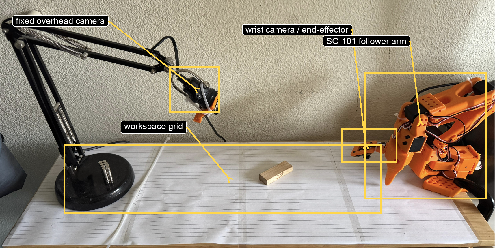
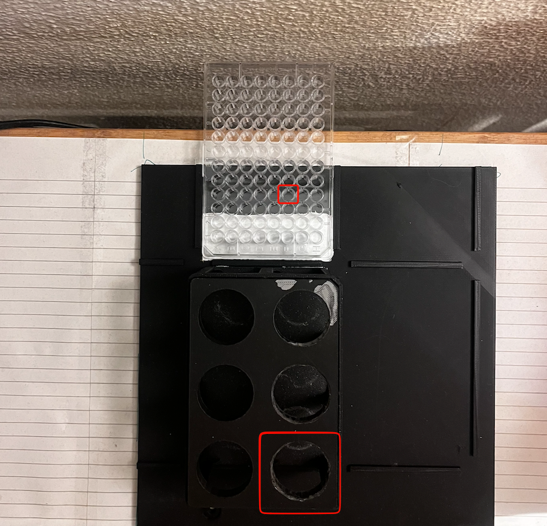
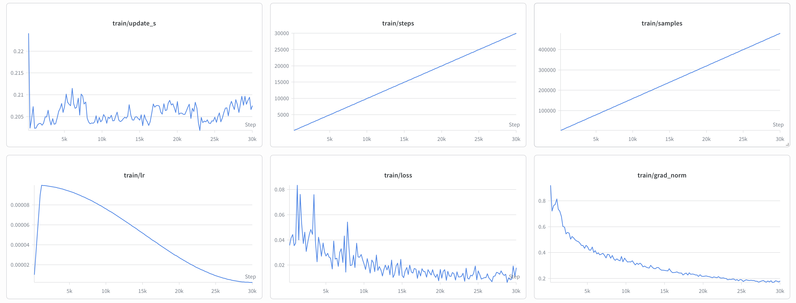
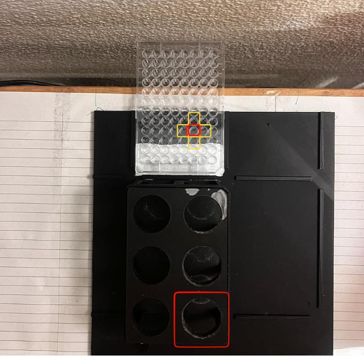
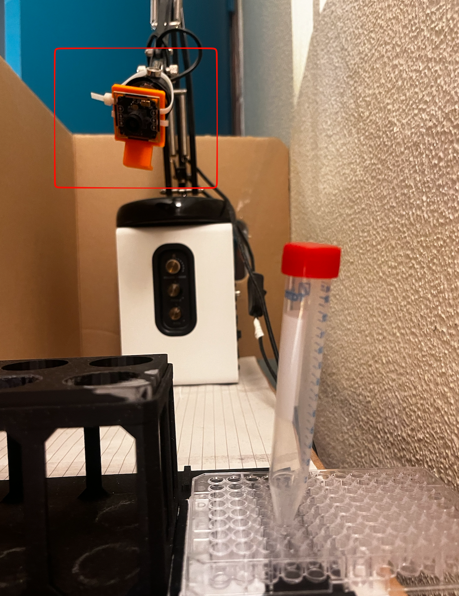

Abstract
Robots such as the Opentrons OT-2 work well when the deck is calibrated and nothing moves, but small physical changes still need human correction. In this project I tested whether a compact Vision-Language-Action (VLA) model can make one simple lab-style manipulation less dependent on fixed coordinates. I fine-tuned SmolVLA-450M on an SO-101 arm for a tube-in-hole task. For the final run, I trained on 50 episodes selected after more than 300 total recorded episodes during setup and testing, and fine-tuned the model on one A100 GPU. The model succeeded in 9 out of 10 trials when the scene matched the training setup, but only 5 out of 10 trials when the tube started in positions absent from the final training set. Moderate lighting changes had limited effect, while a small overhead-camera displacement caused complete failure. The main result is that the model can do the task under tightly controlled conditions, but it depends heavily on fixed cameras, enough spatial coverage in the demonstrations, and a gripper that can hold the tube reliably.
Research Question
Under a fixed two-camera SO-101 setup and 50 final training demonstrations, how does SmolVLA-450M performance on a tube-in-hole task change between training-matched conditions, unseen tube starting positions, altered lighting, and a displaced overhead camera?
Lab automation is rigid, not blind
The OT-2 runs reliably because every object location is calibrated in advance. Nudge a rack a few millimetres and the robot keeps executing the same programmed motion until a human notices.
A VLA learns from demonstrations, not coordinates
Instead of programming each waypoint, the operator records teleoperated episodes and the policy imitates them — which means the policy inherits whatever the demonstrations did and did not cover.
Compact enough to run beside the robot
SmolVLA-450M predicts chunks of roughly 50 future actions and is small enough for local inference, which mattered here: training ran on an A100, but deployment ran on a MacBook M1 Pro.
The interesting question is robustness
Not whether the arm can perform the motion once, but whether it still works when the tube moves, the lights change, or someone bumps the camera — the ordinary events of a shared lab.
Experimental Setup
The SO-101 is an open-source 6-axis arm for imitation-learning research: a passive leader arm moved by hand, an active follower arm that mirrors it, Feetech STS3215 servos with magnetic absolute encoders, and two cameras — one fixed overhead, one wrist-mounted — providing the two visual streams SmolVLA requires.


"Pipe in hole".
50 demonstrations
Recorded with lerobot-record at 640×480 and 30 fps from two OpenCV cameras. More than 300 episodes were recorded in total while debugging camera placement, lighting, and gripper approach; only 50 successful ones formed the final dataset.
SmolVLA-450M fine-tune
lerobot/smolvla_base fine-tuned for 30,000 steps at batch size 16 with AMP on one A100 40 GB GPU. Training loss fell from roughly 0.08 to about 0.01 and then flattened, with a bounded gradient norm.
Local, next to the arm
The trained policy ran on a MacBook M1 Pro (16 GB) beside the robot. No low-latency tunnel to the cluster was available, so the model had to be small enough for on-device inference.

Results
Each condition used 10 trials. A trial counted as successful only if the tube was fully inserted into the target hole without manual correction.


Videos
The baseline run under training-matched conditions, and an example of the angular gripper losing the tube. Both open on YouTube.
 Watch on YouTube
Watch on YouTube
 Watch on YouTube
Watch on YouTube
Why It Failed
The drop from 9/10 to 5/10 suggests the model learned a mixture of tube recognition and a prior over where the tube usually appears in the image. The final dataset never forced the policy to separate "what the tube looks like" from "where the tube usually is."
| Issue | Interpretation |
|---|---|
| Spatial coverage | The 50 episodes omitted several tube start regions, which likely explains the 5/10 result. |
| Visual variation | Lighting varied naturally during recording, which may explain why moderate lighting changes were less damaging. |
| Viewpoint coverage | The overhead camera was fixed during training, so the policy had no reason to learn viewpoint-invariant features. |
This is the classic imitation-learning distribution shift: the policy is trained on the demonstrator's state distribution but must act under the one its own actions create.
The Gripper Confound
The SO-101's angular (scissor) gripper pivots its fingers around a pin. On a cylindrical tube that means a single line of contact instead of an even squeeze — so a failed trial may reflect a policy error, or merely unstable contact.
| Property | Angular | Parallel |
|---|---|---|
| Mechanism | Fingers pivot around a pin | Fingers translate linearly |
| Contact area | Single line along object | Full surface contact |
| Force | Uneven; tube slips or rotates | Even; secure and predictable |
| OT-2 relevance | Problematic for tubes and vials | Standard for lab consumables |
Limitations and Future Work
The lighting and camera-displacement tests were stress tests, not calibrated measurements: illumination was never recorded in lux and the camera displacement was described only approximately. The next iteration should be reproducible by construction.
- Use three rigidly mounted cameras at documented positions, addressing viewpoint rigidity and giving the policy more spatial information.
- Record 150–200 demonstrations from planned grid regions with prompts that encode the start region, such as
"Pipe in hole from left slot". - Replace the angular gripper with a parallel gripper, so policy failures can be told apart from mechanical ones.
- Control and record lighting with fixed LED panels or a light booth at documented intensity.
- Test GPU-based inference, making it possible to compare SmolVLA against larger VLA models on the same dataset and task.
- Treat the VLA as a low-level execution policy for bounded skills, with a separate protocol-level controller deciding what happens next and how to recover from failures.
Conclusion
Compact VLA control can perform a simple lab-relevant manipulation when the physical scene is reproduced closely: 9 out of 10 under training-matched conditions. But success fell to 5 out of 10 from unseen tube positions and to zero after a small camera shift, so this version is not ready for a busy shared lab. The next version needs rigid camera mounting, broader prompted demonstrations across the working area, measured lighting, and a parallel gripper that holds cylindrical tubes consistently — changes that would also separate genuine policy failures from avoidable setup and hardware ones.